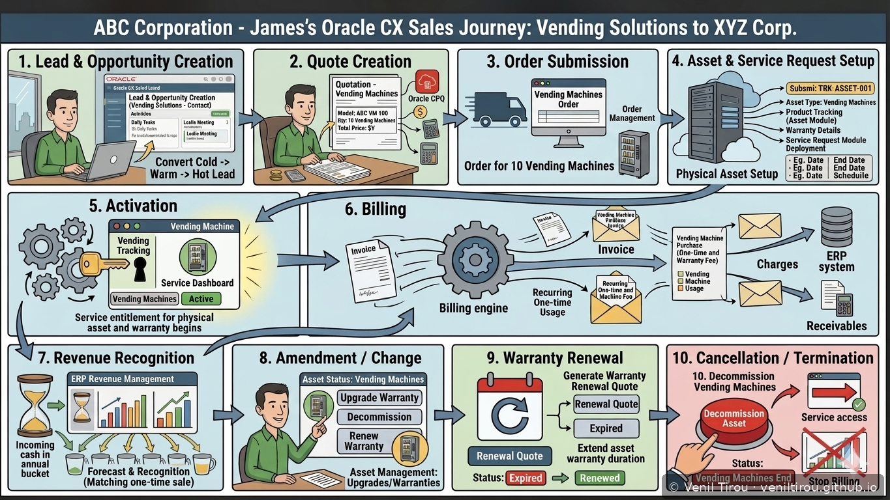
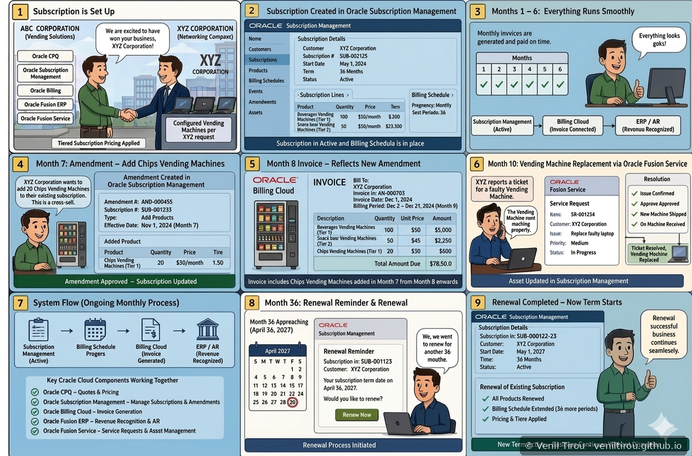
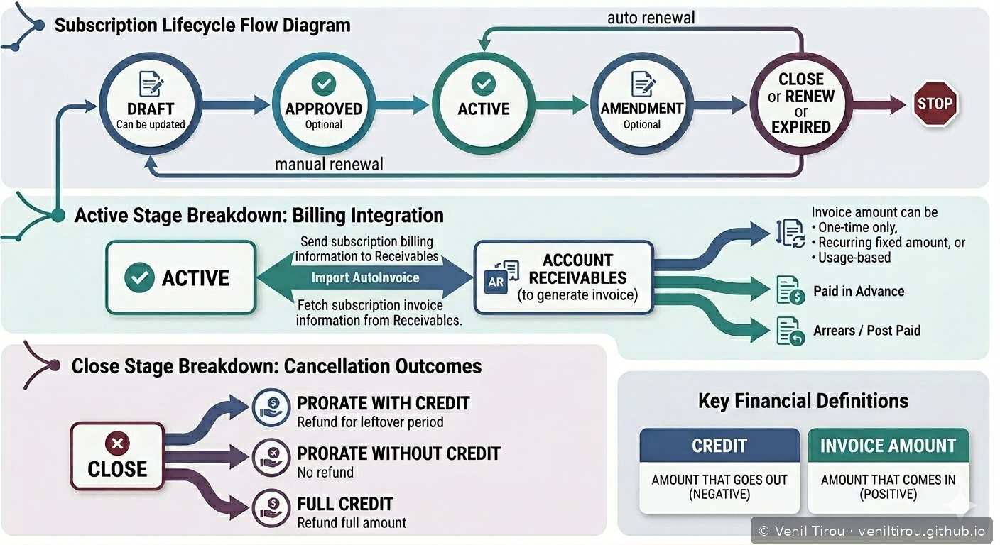
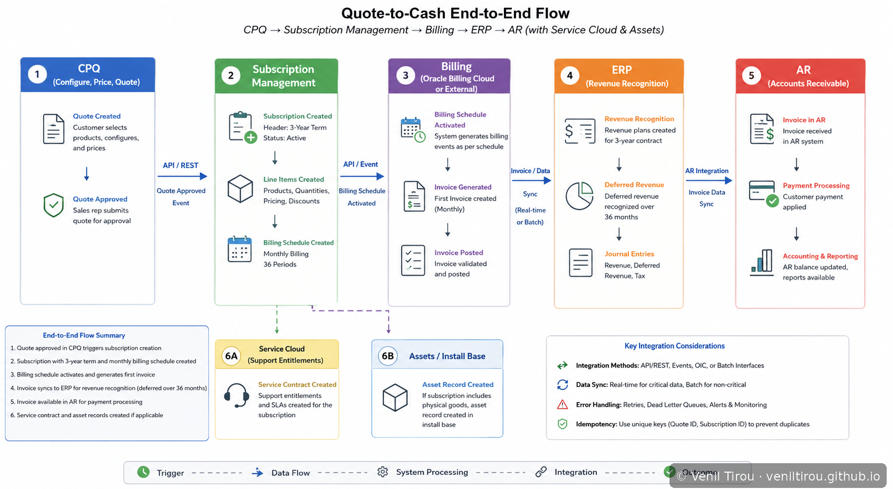
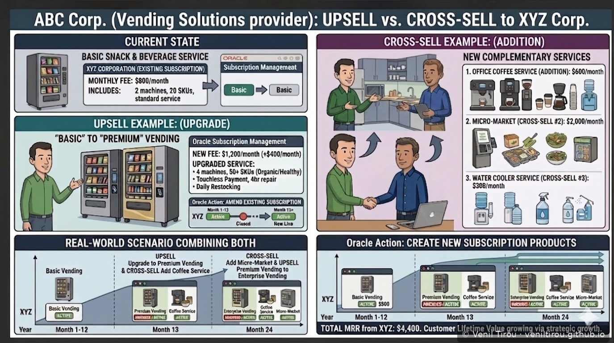
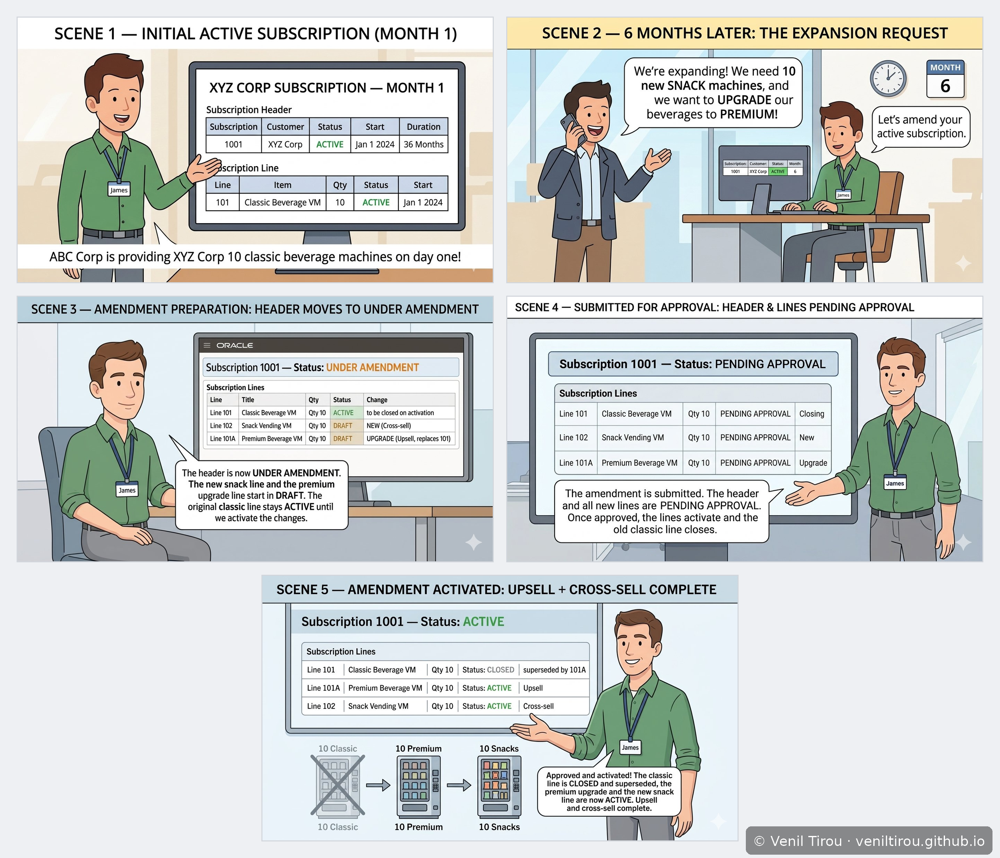
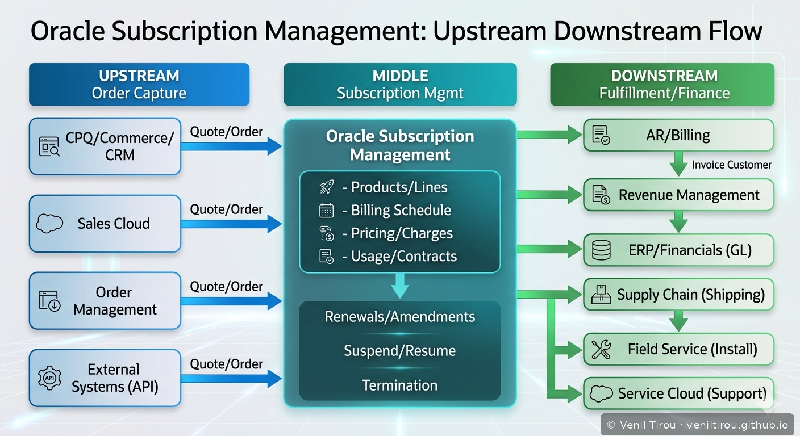
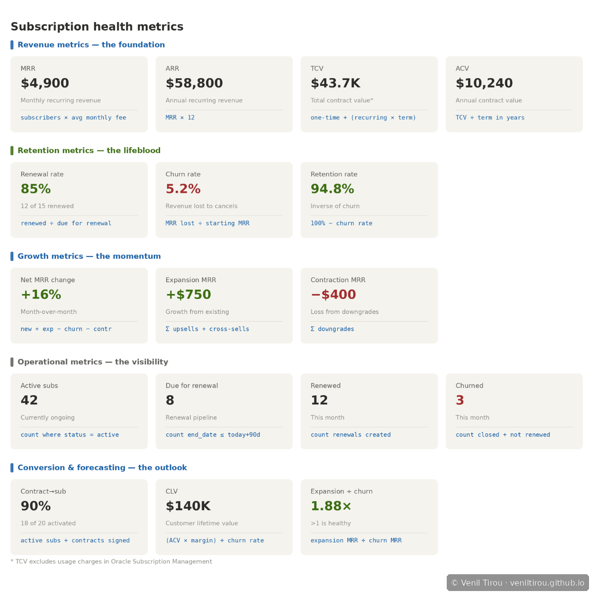

Business Scenario: James, a sales representative at ABC
Corporation, closes a vending solutions deal with XYZ Corporation and sets
up a 36-month subscription with monthly billing. ABC Corporation uses Oracle
Subscription Management to run its entire subscription operations — from
activation through billing, amendments, service and renewal.
Storyboard 1 — Oracle CX Sales → CPQ → Order Management → Subscription → Billing
James's Complete Oracle CX Sales Journey

📱 On mobile? Pinch to zoom to read the details clearly.
What this shows: The complete James journey across 10 steps —
Lead and Opportunity creation in Oracle CX Sales, Quote creation in Oracle CPQ,
Order submission in Order Management, Asset and Service Request setup, Subscription
Activation, Billing (one-time, recurring and usage), Revenue Recognition in ERP,
Amendment and Change management, Warranty Renewal, and Cancellation and Termination.
This is the master end-to-end flow connecting all Oracle CX and ERP products for
a single B2B deal.
Storyboard 2 — Oracle Subscription Management Implemented at ABC Corporation
9-Scene Real-World Walkthrough

📱 On mobile? Pinch to zoom to read the details clearly.
What this shows: Scene 1 — subscription setup after deal closure.
Scene 2 — subscription created with billing schedule. Scenes 3 to 6 — months 1
through 6 running smoothly, Month 7 amendment adding Chips Vending Machines as a
cross-sell, Month 8 invoice reflecting the amendment, Month 10 vending machine
replacement via Oracle Fusion Service. Scenes 7 to 9 — the ongoing monthly billing
loop, Month 36 renewal reminder, and renewal completion starting a new 36-month term.
Storyboard 3 — Subscription Lifecycle Flow
Status Flow, Billing Integration and Cancellation Outcomes

📱 On mobile? Pinch to zoom to read the details clearly.
What this shows: Three layers — status flow (Draft → Approved →
Active → Amendment → Close/Renew/Expired) with auto and manual renewal paths.
Active stage billing integration with Accounts Receivable showing AutoInvoice
import and invoice types (one-time, recurring, usage-based). Close stage
cancellation outcomes — Prorate with Credit, Prorate without Credit, and Full Credit.
Storyboard 4 — Quote-to-Cash End-to-End Flow
CPQ → Subscription → Billing → ERP → AR

📱 On mobile? Pinch to zoom to read the details clearly.
What this shows: Technical integration across 5 systems —
CPQ quote approval triggering subscription creation via API/REST, subscription
header and line items created with 36-month billing schedule, billing schedule
activating invoice generation, ERP creating deferred revenue plans and journal
entries over 36 months, AR receiving invoices and processing payments. Additional
downstream flows to Service Cloud for entitlements and Assets/Install Base for
physical asset tracking. Integration methods covered include API/REST, Events,
OIC, Batch, real-time and batch sync, error handling and idempotency.
Storyboard 5 — Upsell vs Cross-Sell and Amendment Scenarios
Growing the XYZ Corporation Account Value

📱 On mobile? Pinch to zoom to read the details clearly.
What this shows: Current state — XYZ has Basic Snack and Beverage
at $800/month. Upsell — upgrading to Premium Vending at $1,200/month via subscription
amendment. Cross-sell — adding Office Coffee ($600/month), Micro-Market ($2,000/month)
and Water Cooler ($300/month) as new subscription products. Combined scenario —
Month 1-12 Basic, Month 13 Upsell and Coffee, Month 24 Micro-Market added. Total
MRR grows to $4,400 through strategic account expansion.
Technical Deep Dive — The Amendment Lifecycle (Header & Line Statuses)

📱 On mobile? Pinch to zoom to read the table statuses clearly.
What this shows: The same upsell and cross-sell as above, but at the
data level — how the subscription header and its lines move through the amendment
lifecycle. Scene 1: subscription 1001 and its Classic Beverage line are
ACTIVE. Scene 2: six months in, XYZ requests a premium upgrade (upsell)
and new snack machines (cross-sell) — the header is still ACTIVE, nothing has changed yet.
Scene 3: amending creates the new snack and premium lines in DRAFT and moves
the header to UNDER AMENDMENT, while the original classic line stays ACTIVE. Scene
4: once submitted, the header and all lines are PENDING APPROVAL together.
Scene 5: on activation the header returns to ACTIVE, the classic line is
CLOSED and superseded by the premium line, and the new lines are ACTIVE. The key principle:
Oracle never edits a line in place — it supersedes and cross-references, so quoting and
billing history stays intact.
Storyboard 6 — Upstream and Downstream Integrations
Oracle Subscription Management at the Center of the Ecosystem

📱 On mobile? Pinch to zoom to read the details clearly.
What this shows: Upstream systems feeding in via Quote/Order —
CPQ/Commerce/CRM, Sales Cloud, Order Management, External Systems via API.
Core functions — Products/Lines, Billing Schedule, Pricing/Charges,
Usage/Contracts, Renewals/Amendments, Suspend/Resume, Termination. Downstream
systems — AR/Billing, Revenue Management, ERP/Financials (GL), Supply Chain,
Field Service and Service Cloud. This architecture view shows how Subscription
Management bridges front-office CX with back-office ERP and finance.
Storyboard 7 — Subscription Health Metrics Dashboard
KPIs That Measure Subscription Business Health

📱 On mobile? Pinch to zoom to read the details clearly.
What this shows: Five metric categories — Revenue (MRR $4,900,
ARR $58,800, TCV $43,700, ACV $10,240), Retention (Renewal Rate 85%, Churn Rate
5.2%, Retention Rate 94.8%), Growth (Net MRR +16%, Expansion MRR +$750, Contraction
MRR -$400), Operational (42 active, 8 due for renewal, 12 renewed, 3 churned this
month), Conversion and Forecasting (90% contract-to-subscription, CLV $140,000,
Expansion-to-Churn ratio 1.88x — above 1 is healthy).